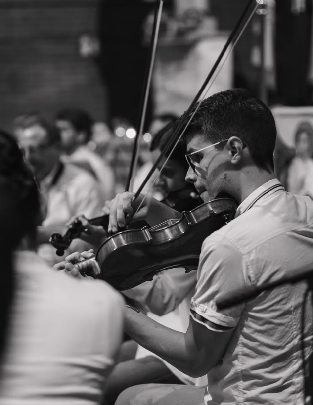
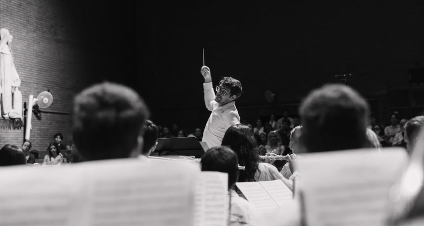
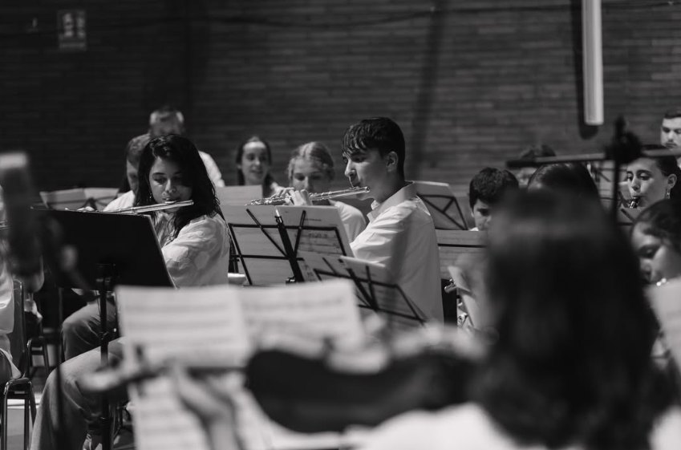
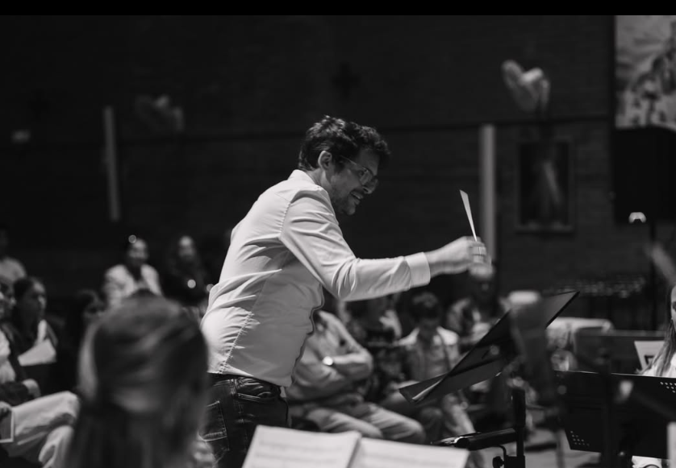

Primer movimiento
- Obertura: La Creación
- La familia unida
- La tentación
- El lamento del padre
Música, comunidad y fe
Orquesta Alfa & Omega es un proyecto amateur que surge de manera espontánea entre músicos, cantantes y amantes de la música, con una fuerte conexión con la parroquia de Santa Joaquina de Vedruna en Barcelona.
Quiénes somos
La orquesta se forma de manera natural entre amigos, vecinos, músicos de la parroquia y personas que buscan ofrecer un servicio cultural y espiritual a través de la música. No es solo una agrupación musical: es un proyecto vivo, cercano y profundamente humano.
La Orquesta Alfa & Omega nació vinculada a la parroquia de Santa Joaquina de Vedruna en Barcelona, donde inicialmente se reunía buena parte de sus integrantes. Con el tiempo, el proyecto ha ido creciendo y hoy cuenta también con músicos procedentes de otras parroquias de Barcelona y de distintos lugares. Esta diversidad forma parte de la identidad de la orquesta: personas con diferentes trayectorias y procedencias que se encuentran para compartir talento, trabajo en equipo y emoción a través de la música.
Proyecto central
Ruah Hakodesh · Invocación al Espíritu Santo
Duración aproximada: 1h
Agenda
Oratorio de Santa Maria de la Bonaigua · 12:40 h
Equipo
Flautas:
Carles Jorquera, Elena Rubio, Marta Iranzo
Clarinetes:
Débora Rubio, Pablo Miralles
Trompetas:
Juan Ramón, David Álvarez, Marc Jorquera, Pedro Morán, Emmanuel Romero
Trombón:
Joan Gil
Saxo barítono:
Laura Zaragoza
Saxo alto:
Luisi Romero
Oboe:
Marcel Alsina
Violines I:
Sofía Carmona, Élie Caratgé
Violines II:
Judith Castillo, Adriana Morán, Elías Orri
Violas:
Marcos Miralles, Gabriel López
Violoncelo:
Josep Bataller
Batería y caja:
Lucas Miralles, Andrés Sánchez
Femenino:
Celeste Santana, Elena Aguirre, Irene Fonts, Eva Altagracia, Cristina Rabal, Mar López, Yael Garrido, Felisa Teresa
Masculino:
Johnny Aristazabal, Pablo Iranzo, Agustín Fonts, Toño, Israel Muskus
Dirección:
Claudio Marrero
Dirección:
Luis Messeguer, Claudio Marrero




Contacto
WhatsApp: +34 625 316 682
Email: alfaomegamusica@gmail.com
Si quieres participar, colaborar o solicitar una actuación, escribe directamente por WhatsApp o correo.